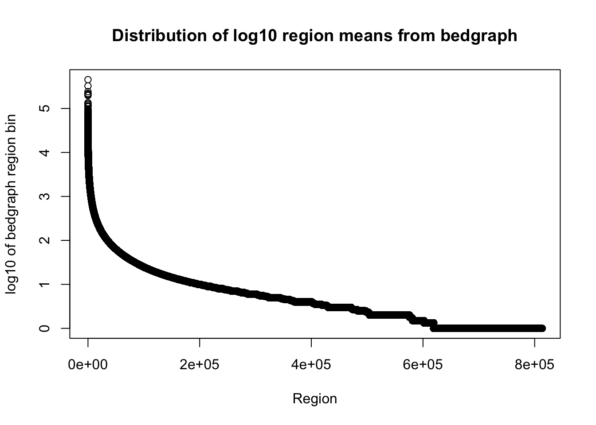
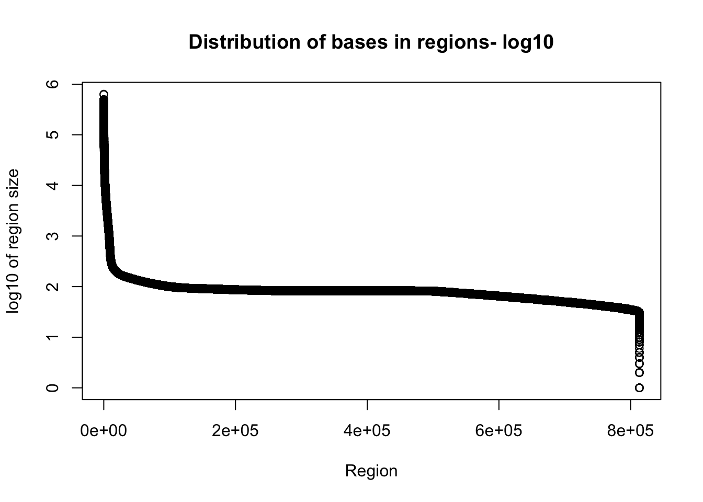
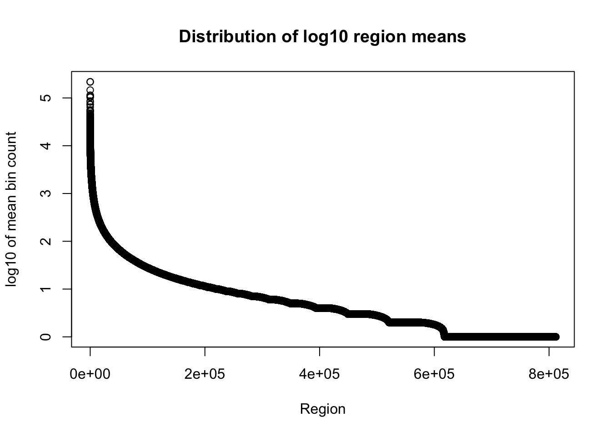
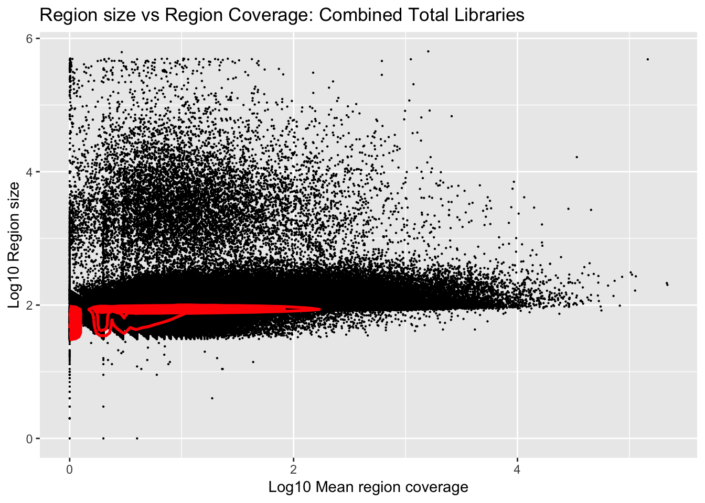
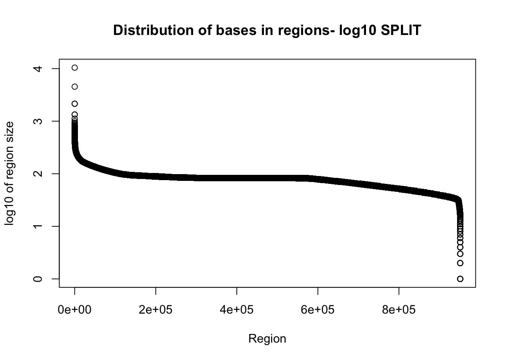
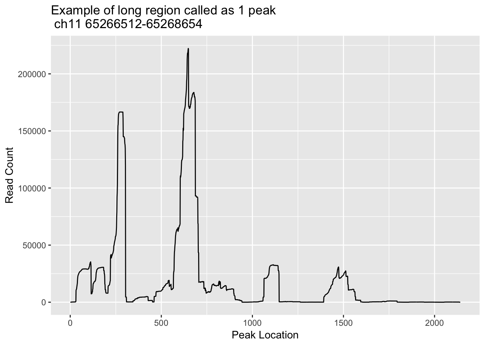
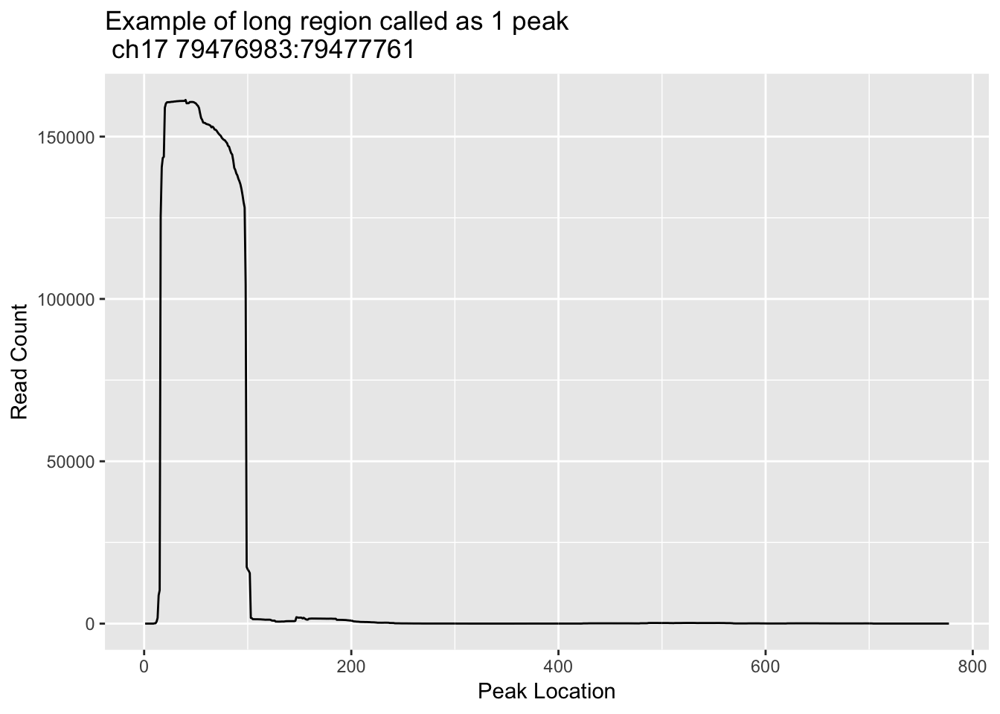
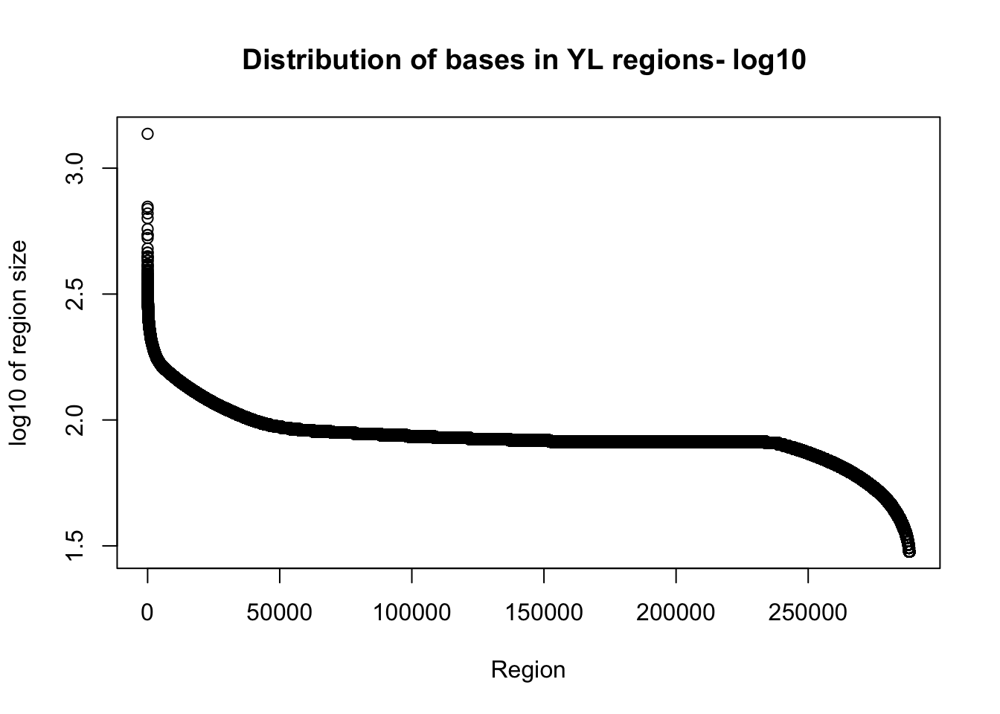
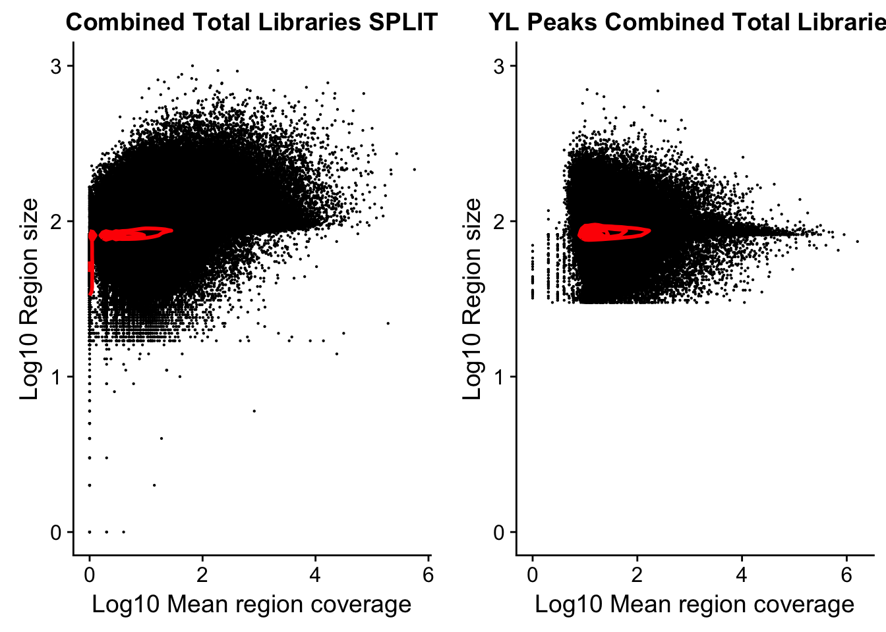

Last updated: 2018-07-06
workflowr checks: (Click a bullet for more information) ✔ R Markdown file: up-to-date
Great! Since the R Markdown file has been committed to the Git repository, you know the exact version of the code that produced these results.
✔ Environment: empty
Great job! The global environment was empty. Objects defined in the global environment can affect the analysis in your R Markdown file in unknown ways. For reproduciblity it’s best to always run the code in an empty environment.
✔ Seed:
set.seed(12345)
The command set.seed(12345) was run prior to running the code in the R Markdown file. Setting a seed ensures that any results that rely on randomness, e.g. subsampling or permutations, are reproducible.
✔ Session information: recorded
Great job! Recording the operating system, R version, and package versions is critical for reproducibility.
✔ Repository version: df5cfe4
wflow_publish or wflow_git_commit). workflowr only checks the R Markdown file, but you know if there are other scripts or data files that it depends on. Below is the status of the Git repository when the results were generated:
Ignored files:
Ignored: .DS_Store
Ignored: .Rhistory
Ignored: .Rproj.user/
Ignored: analysis/figure/
Ignored: output/.DS_Store
Untracked files:
Untracked: data/18486.genecov.txt
Untracked: data/YL-SP-18486-T_S9_R1_001-genecov.txt
Untracked: data/bedgraph_peaks/
Untracked: data/bin200.5.T.nuccov.bed
Untracked: data/bin200.Anuccov.bed
Untracked: data/bin200.nuccov.bed
Untracked: data/gene_cov/
Untracked: data/leafcutter/
Untracked: data/nuc6up/
Untracked: data/reads_mapped_three_prime_seq.csv
Untracked: data/ssFC200.cov.bed
Untracked: output/picard/
Untracked: output/plots/
Untracked: output/qual.fig2.pdf
Unstaged changes:
Modified: analysis/dif.iso.usage.leafcutter.Rmd
Modified: analysis/explore.filters.Rmd
Modified: analysis/test.max2.Rmd
Modified: code/Snakefile
| File | Version | Author | Date | Message |
|---|---|---|---|---|
| Rmd | df5cfe4 | Briana Mittleman | 2018-07-06 | add Yangs peaks |
| html | 9de3677 | Briana Mittleman | 2018-07-05 | Build site. |
| Rmd | c619183 | Briana Mittleman | 2018-07-05 | examine long peaks |
| html | 2d67ec5 | Briana Mittleman | 2018-07-05 | Build site. |
| Rmd | 15c7967 | Briana Mittleman | 2018-07-05 | add split analysis |
| html | 24c6663 | Briana Mittleman | 2018-07-03 | Build site. |
| Rmd | 776fc62 | Briana Mittleman | 2018-07-03 | genome cov stats |
| html | b48f27c | Briana Mittleman | 2018-07-02 | Build site. |
| Rmd | 1e2ff4c | Briana Mittleman | 2018-07-02 | evaluate bedgraph regions |
I will call peaks de novo in the combined total and nuclear fraction 3’ Seq. The data is reletevely clean so I will start with regions that have continuous coverage. I will first create a bedgraph.
#!/bin/bash
#SBATCH --job-name=Tbedgraph
#SBATCH --account=pi-yangili1
#SBATCH --time=24:00:00
#SBATCH --output=Tbedgraph.out
#SBATCH --error=Tbedgraph.err
#SBATCH --partition=broadwl
#SBATCH --mem=40G
#SBATCH --mail-type=END
module load Anaconda3
source activate three-prime-env
samtools sort -o /project2/gilad/briana/threeprimeseq/data/macs2/TotalBamFiles.sort.bam /project2/gilad/briana/threeprimeseq/data/macs2/TotalBamFiles.bam
bedtools genomecov -ibam /project2/gilad/briana/threeprimeseq/data/macs2/TotalBamFiles.sort.bam -bga > /project2/gilad/briana/threeprimeseq/data/bedgraph/TotalBamFiles.bedgraph
Next I will create the file without the 0 places in the genome. I will be able to use this for the bedtools merge function.
awk '{if ($4 != 0) print}' TotalBamFiles.bedgraph >TotalBamFiles_no0.bedgraph I can merge the regions with consequtive reads using the bedtools merge function.
-i input bed
-c colomn to act on
-o collapse, print deliminated list of the counts from -c call
-delim “,”
This is the mergeBedgraph.sh script. It takes in the no 0 begraph filename without the path.
#!/bin/bash
#SBATCH --job-name=merge
#SBATCH --account=pi-yangili1
#SBATCH --time=8:00:00
#SBATCH --output=merge.out
#SBATCH --error=merge.err
#SBATCH --partition=broadwl
#SBATCH --mem=16G
#SBATCH --mail-type=END
module load Anaconda3
source activate three-prime-env
bedgraph=$1
describer=$(echo ${bedgraph} | sed -e "s/.bedgraph$//")
bedtools merge -c 4,4,4 -o count,mean,collapse -delim "," -i /project2/gilad/briana/threeprimeseq/data/bedgraph/$1 > /project2/gilad/briana/threeprimeseq/data/bedgraph/${describer}.peaks.bed
Run this first on the total bedgraph, TotalBamFiles_no0.bedgraph. The file has chromosome, start, end, number of regions, mean, and a string of the values.
This is not exaclty what I want. I need to go back and do genome cov not collapsing with bedgraph.
To evaluate this I will bring the file into R and plot some statistics about it.
#!/bin/bash
#SBATCH --job-name=Tgencov
#SBATCH --account=pi-yangili1
#SBATCH --time=24:00:00
#SBATCH --output=Tgencov.out
#SBATCH --error=Tgencov.err
#SBATCH --partition=broadwl
#SBATCH --mem=40G
#SBATCH --mail-type=END
module load Anaconda3
source activate three-prime-env
bedtools genomecov -ibam /project2/gilad/briana/threeprimeseq/data/macs2/TotalBamFiles.sort.bam -d > /project2/gilad/briana/threeprimeseq/data/bedgraph/TotalBamFiles.genomecov.bed
I will now remove the bases with 0 coverage.
awk '{if ($3 != 0) print}' TotalBamFiles.genomecov.bed > TotalBamFiles.genomecov.no0.bed
awk '{print $1 "\t" $2 "\t" $2 "\t" $3}' TotalBamFiles.genomecov.no0.bed > TotalBamFiles.genomecov.no0.fixed.bedI will now merge the genomecov_no0 file with mergeGencov.sh
#!/bin/bash
#SBATCH --job-name=mergegc
#SBATCH --account=pi-yangili1
#SBATCH --time=8:00:00
#SBATCH --output=mergegc.out
#SBATCH --error=mergegc.err
#SBATCH --partition=broadwl
#SBATCH --mem=16G
#SBATCH --mail-type=END
module load Anaconda3
source activate three-prime-env
gencov=$1
describer=$(echo ${gencov} | sed -e "s/.genomecov.no0.fixed.bed$//")
bedtools merge -c 4,4,4 -o count,mean,collapse -delim "," -i /project2/gilad/briana/threeprimeseq/data/bedgraph/$1 > /project2/gilad/briana/threeprimeseq/data/bedgraph/${describer}.gencovpeaks.bed
This method gives us 811,637 regions.
library(dplyr)Warning: package 'dplyr' was built under R version 3.4.4
Attaching package: 'dplyr'The following objects are masked from 'package:stats':
filter, lagThe following objects are masked from 'package:base':
intersect, setdiff, setequal, unionlibrary(ggplot2)
library(readr)
library(workflowr)Loading required package: rmarkdownThis is workflowr version 1.0.1
Run ?workflowr for help getting startedlibrary(tidyr)First I will look at the bedgraph file. This is not as imformative becuase it combined regions with the same counts.
total_bedgraph=read.table("../data/bedgraph_peaks/TotalBamFiles_no0.peaks.bed",col.names = c("chr", "start", "end", "regions", "mean", "counts"))Plot the mean:
plot(sort(log10(total_bedgraph$mean), decreasing=T), xlab="Region", ylab="log10 of bedgraph region bin", main="Distribution of log10 region means from bedgraph")
| Version | Author | Date |
|---|---|---|
| 24c6663 | Briana Mittleman | 2018-07-03 |
I want to look at the distribution of how many bases are included in the regions.
Tregion_bases=total_bedgraph %>% mutate(bases=end-start) %>% select(bases)Warning: package 'bindrcpp' was built under R version 3.4.4plot(sort(log10(Tregion_bases$bases), decreasing = T), xlab="Region", ylab="log10 of region size", main="Distribution of bases in regions- log10")
| Version | Author | Date |
|---|---|---|
| 24c6663 | Briana Mittleman | 2018-07-03 |
Given the reads are abotu 60bp this is probably pretty good.
I am only going to look at the number of bases in region and mean coverage columns here because the file is really big.
total_gencov=read.table("../data/bedgraph_peaks/TotalBamFiles.gencovpeaks_noregstring.bed",col.names = c("chr", "start", "end", "regions", "mean"))Plot the mean:
plot(sort(log10(total_gencov$mean), decreasing=T), xlab="Region", ylab="log10 of mean bin count", main="Distribution of log10 region means")
| Version | Author | Date |
|---|---|---|
| 24c6663 | Briana Mittleman | 2018-07-03 |
plot(sort(log10(total_gencov$regions), decreasing = T), xlab="Region", ylab="log10 of region size", main="Distribution of bases in regions- log10")| Version | Author | Date |
|---|---|---|
| 24c6663 | Briana Mittleman | 2018-07-03 |
Plot number of bases against the mean:
ggplot(total_gencov, aes(y=log10(regions), x=log10(mean))) +
geom_point(na.rm = TRUE, size = 0.1) +
geom_density2d(na.rm = TRUE, size = 1, colour = 'red') +
ylab('Log10 Region size') +
xlab('Log10 Mean region coverage') +
ggtitle("Region size vs Region Coverage: Combined Total Libraries")
| Version | Author | Date |
|---|---|---|
| 24c6663 | Briana Mittleman | 2018-07-03 |
In the previous analysis I did not account for split reads in the genome coveragre step. This may explain some of the long regions that are an effect of splicing. This script is
#!/bin/bash
#SBATCH --job-name=Tgencovsplit
#SBATCH --account=pi-yangili1
#SBATCH --time=24:00:00
#SBATCH --output=Tgencovsplit.out
#SBATCH --error=Tgencovaplit.err
#SBATCH --partition=broadwl
#SBATCH --mem=40G
#SBATCH --mail-type=END
module load Anaconda3
source activate three-prime-env
bedtools genomecov -ibam /project2/gilad/briana/threeprimeseq/data/macs2/TotalBamFiles.sort.bam -d -split > /project2/gilad/briana/threeprimeseq/data/bedgraph/TotalBamFiles.split.genomecov.bedNow I need to remove the 0s and merge.
awk '{if ($3 != 0) print}' TotalBamFiles.split.genomecov.bed > TotalBamFiles.split.genomecov.no0.bed
awk '{print $1 "\t" $2 "\t" $2 "\t" $3}' TotalBamFiles.split.genomecov.no0.bed > TotalBamFiles.split.genomecov.no0.fixed.bedUse this file to run mergeGencov.sh.
total_gencov_split=read.table("../data/bedgraph_peaks/TotalBamFiles.split.gencovpeaks.noregstring.bed",col.names = c("chr", "start", "end", "regions", "mean"))Plot the region size. I expect some of the long regions are gone.
plot(sort(log10(total_gencov_split$regions), decreasing = T), xlab="Region", ylab="log10 of region size", main="Distribution of bases in regions- log10 SPLIT")
| Version | Author | Date |
|---|---|---|
| 2d67ec5 | Briana Mittleman | 2018-07-05 |
Plot the region size against the mean:
Plot number of bases against the mean:
splitplot=ggplot(total_gencov_split, aes(y=log10(regions), x=log10(mean))) +
geom_point(na.rm = TRUE, size = 0.1) +
geom_density2d(na.rm = TRUE, size = 1, colour = 'red') +
ylab('Log10 Region size') +
xlab('Log10 Mean region coverage') +
ggtitle("Combined Total Libraries SPLIT")Some of the regions are long and probably represent 2 or more sites. This is evident in highly expressed genes such as actB. I will look at some of the long regions and make histograms with the strings of coverage in the region.
First I am going to look at chr11:65266512-65268654, this is peak 580475 I will go into the otalBamFiles.split.gencovpeaks.bed file and use:
grep -n 65266512 TotalBamFiles.split.gencovpeaks.bed | awk '{print $6}' > loc_ch11_65266512_65268654.txtloc_ch11_65266512_65268654=read.csv("../data/bedgraph_peaks/loc_ch11_65266512_65268654.txt", header=F) %>% t
loc_ch11_65266512_65268654_df= as.data.frame(loc_ch11_65266512_65268654)
loc_ch11_65266512_65268654_df$loc= seq(1:nrow(loc_ch11_65266512_65268654_df))
colnames(loc_ch11_65266512_65268654_df)= c("count", "loc")
ggplot(loc_ch11_65266512_65268654_df, aes(x=loc, y=count)) + geom_line() + labs(y="Read Count", x="Peak Location", title="Example of long region called as 1 peak \n ch11 65266512-65268654")
| Version | Author | Date |
|---|---|---|
| 9de3677 | Briana Mittleman | 2018-07-05 |
Try one more. Example. line 816811, chr:17- 79476983- 79477761
grep -n 79476983 TotalBamFiles.split.gencovpeaks.bed | awk '{print $6}' > loc_ch17_79476983_79477761.txtloc_ch17_79476983_79477761=read.csv("../data/bedgraph_peaks/loc_ch17_79476983_79477761.txt", header=F) %>% t
loc_ch17_79476983_79477761_df= as.data.frame(loc_ch17_79476983_79477761)
loc_ch17_79476983_79477761_df$loc= seq(1:nrow(loc_ch17_79476983_79477761_df))
colnames(loc_ch17_79476983_79477761_df)= c("count", "loc")
ggplot(loc_ch17_79476983_79477761_df, aes(x=loc, y=count)) + geom_line() + labs(y="Read Count", x="Peak Location", title="Example of long region called as 1 peak \n ch17 79476983:79477761")
| Version | Author | Date |
|---|---|---|
| 9de3677 | Briana Mittleman | 2018-07-05 |
This one is not multiple peaks but it does need to be trimmed.
Yang created an adhoc method to do this.
def main(inFile, outFile, ctarget):
fout = open(outFile,'w')
mincount = 10
ov = 20
current_peak = []
currentChrom = None
for ln in open(inFile):
chrom, pos, count = ln.split()
if chrom != ctarget: continue
count = float(count)
if currentChrom == None:
currentChrom = chrom
if count == 0 or currentChrom != chrom:
if len(current_peak) > 0:
M = max([x[1] for x in current_peak])
if M > mincount:
all_peaks = refine_peak(current_peak, M, M*0.1,M*0.05)
#refined_peaks = [(x[0][0],x[-1][0], np.mean([y[1] for y in x])) for x in all_peaks]
rpeaks = [(int(x[0][0])-ov,int(x[-1][0])+ov, np.mean([y[1] for y in x])) for x in all_peaks]
if len(rpeaks) > 1:
for clu in cluster_intervals(rpeaks)[0]:
M = max([x[2] for x in clu])
merging = []
for x in clu:
if x[2] > M *0.5:
#print x, M
merging.append(x)
c, s,e,mean = chrom, min([x[0] for x in merging])+ov, max([x[1] for x in merging])-ov, np.mean([x[2] for x in merging])
#print c,s,e,mean
fout.write("chr%s\t%d\t%d\t%d\t+\t.\n"%(c,s,e,mean))
fout.flush()
elif len(rpeaks) == 1:
s,e,mean = rpeaks[0]
fout.write("chr%s\t%d\t%d\t%f\t+\t.\n"%(chrom,s+ov,e-ov,mean))
print "chr%s"%chrom+"\t%d\t%d\t%f\t+\t.\n"%rpeaks[0]
#print refined_peaks
current_peak = []
else:
current_peak.append((pos,count))
currentChrom = chrom
def refine_peak(current_peak, M, thresh, noise, minpeaksize=30):
cpeak = []
opeak = []
allcpeaks = []
allopeaks = []
for pos, count in current_peak:
if count > thresh:
cpeak.append((pos,count))
opeak = []
continue
elif count > noise:
opeak.append((pos,count))
else:
if len(opeak) > minpeaksize:
allopeaks.append(opeak)
opeak = []
if len(cpeak) > minpeaksize:
allcpeaks.append(cpeak)
cpeak = []
if len(cpeak) > minpeaksize:
allcpeaks.append(cpeak)
if len(opeak) > minpeaksize:
allopeaks.append(opeak)
allpeaks = allcpeaks
for opeak in allopeaks:
M = max([x[1] for x in opeak])
allpeaks += refine_peak(opeak, M, M*0.3, noise)
#print [(x[0],x[-1]) for x in allcpeaks], [(x[0],x[-1]) for x in allopeaks], [(x[0],x[-1]) for x in allpeaks]
#print '---\n'
return allpeaks
if __name__ == "__main__":
import numpy as np
from misc_helper import *
import sys
chrom = sys.argv[1]
inFile = "/project2/yangili1/threeprimeseq/gencov/TotalBamFiles.split.genomecov.bed"
outFile = "APApeaks_chr%s.bed"%chrom
main(inFile, outFile, chrom)This is done by chromosome and takes in the TotalBam Split genome coverage file I made.I am going to look at the stats for these peaks.
YL_peaks=read.table("../data/bedgraph_peaks/APApeaks.bed", col.names = c("chr", "start", "end", "count", "strand", "score")) %>% mutate(length=end-start)Plot the lengths
plot(sort(log10(YL_peaks$length), decreasing = T), xlab="Region", ylab="log10 of region size", main="Distribution of bases in YL regions- log10 ")
Plot number of bases against the mean:
YLplot=ggplot(YL_peaks, aes(y=log10(length), x=log10(count))) +
geom_point(na.rm = TRUE, size = 0.1) +
geom_density2d(na.rm = TRUE, size = 1, colour = 'red') +
ylab('Log10 Region size') +
xlab('Log10 Mean region coverage') +
ggtitle("YL Peaks Combined Total Libraries")library(cowplot)Warning: package 'cowplot' was built under R version 3.4.3
Attaching package: 'cowplot'The following object is masked from 'package:ggplot2':
ggsaveplot_grid(splitplot, YLplot)
#!/bin/bash
#SBATCH --job-name=Ngencov_s
#SBATCH --account=pi-yangili1
#SBATCH --time=24:00:00
#SBATCH --output=Ngencov_s.out
#SBATCH --error=Ngencov_s.err
#SBATCH --partition=broadwl
#SBATCH --mem=40G
#SBATCH --mail-type=END
module load Anaconda3
source activate three-prime-env
samtools sort -o /project2/gilad/briana/threeprimeseq/data/macs2/NuclearBamFiles.sort.bam /project2/gilad/briana/threeprimeseq/data/macs2/NuclearBamFiles.bam
bedtools genomecov -ibam /project2/gilad/briana/threeprimeseq/data/macs2/NuclearBamFiles.sort.bam -d -split > /project2/gilad/briana/threeprimeseq/data/bedgraph/NuclearBamFiles.split.genomecov.bed
sessionInfo()R version 3.4.2 (2017-09-28)
Platform: x86_64-apple-darwin15.6.0 (64-bit)
Running under: macOS Sierra 10.12.6
Matrix products: default
BLAS: /Library/Frameworks/R.framework/Versions/3.4/Resources/lib/libRblas.0.dylib
LAPACK: /Library/Frameworks/R.framework/Versions/3.4/Resources/lib/libRlapack.dylib
locale:
[1] en_US.UTF-8/en_US.UTF-8/en_US.UTF-8/C/en_US.UTF-8/en_US.UTF-8
attached base packages:
[1] stats graphics grDevices utils datasets methods base
other attached packages:
[1] cowplot_0.9.2 bindrcpp_0.2.2 tidyr_0.7.2 workflowr_1.0.1
[5] rmarkdown_1.8.5 readr_1.1.1 ggplot2_2.2.1 dplyr_0.7.5
loaded via a namespace (and not attached):
[1] Rcpp_0.12.17 compiler_3.4.2 pillar_1.1.0
[4] git2r_0.21.0 plyr_1.8.4 bindr_0.1.1
[7] R.methodsS3_1.7.1 R.utils_2.6.0 tools_3.4.2
[10] digest_0.6.15 jsonlite_1.5 evaluate_0.10.1
[13] tibble_1.4.2 gtable_0.2.0 pkgconfig_2.0.1
[16] rlang_0.2.1 yaml_2.1.19 stringr_1.3.1
[19] knitr_1.18 hms_0.4.1 rprojroot_1.3-2
[22] grid_3.4.2 tidyselect_0.2.4 reticulate_1.4
[25] glue_1.2.0 R6_2.2.2 purrr_0.2.5
[28] magrittr_1.5 whisker_0.3-2 MASS_7.3-48
[31] backports_1.1.2 scales_0.5.0 htmltools_0.3.6
[34] assertthat_0.2.0 colorspace_1.3-2 labeling_0.3
[37] stringi_1.2.2 lazyeval_0.2.1 munsell_0.4.3
[40] R.oo_1.22.0
This reproducible R Markdown analysis was created with workflowr 1.0.1